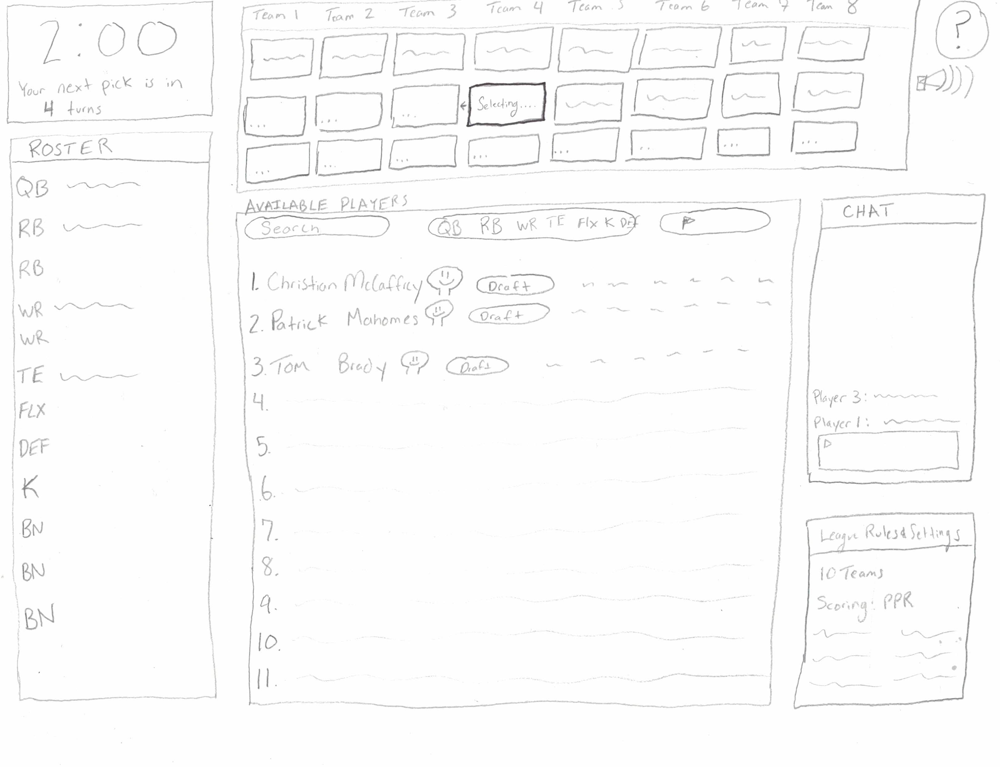
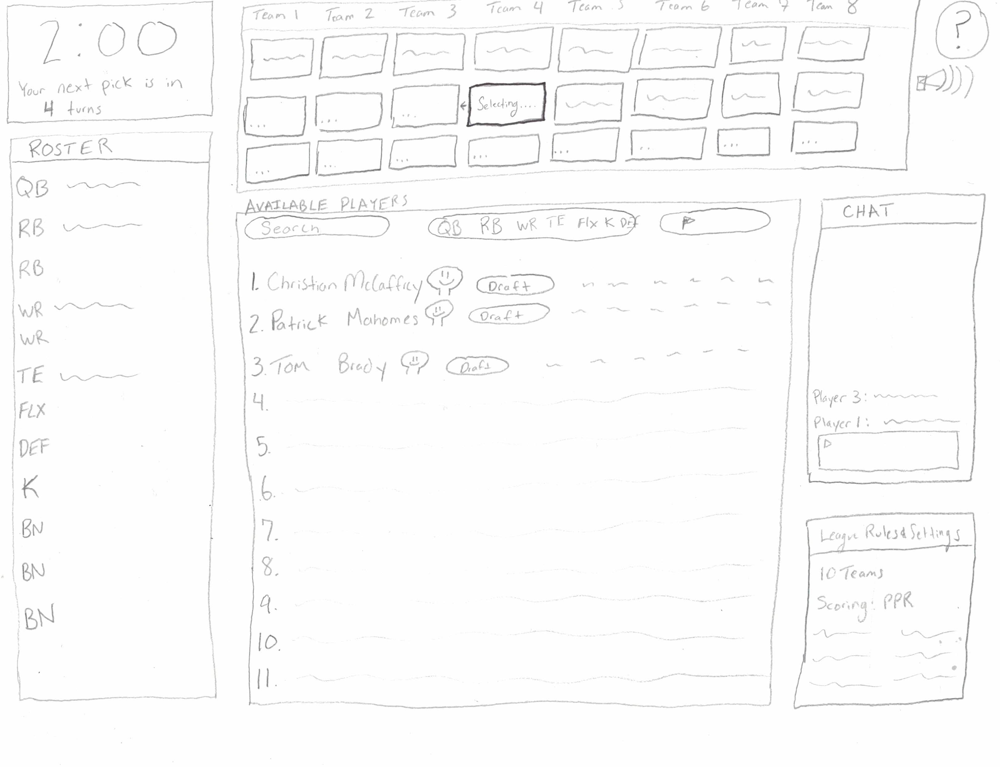

Portfolio
Check Out Some of My Works.
During my time in academia, I've been able to work on various UI/UX related projects. They are always to blast to work on and I always strive to create projects that I am proud of. To see a few of my projects, please continue reading!
Fantasy Football Draft Interface
For my UX design class, I designed my own interface for a web fantasy football draft platform. Fantasy sports are a multi-billion-dollar industry and creating an intuitive draft interface
the meets the needs for a diverse set of users is an ever-changing problem. For this project, I went through the steps of researching, creating, and testing my own fantasy football draft interface.
To learn more about this project and the process I used, please click the "Details" button below.
Tools used: Adobe XD, Adobe Spark, Matplotlib
 

Contact
I'd Love To Hear From You.
Email Me At
reesepearsallcs@gmail.com
reesepearsall@montana.edu
Call Me At
Mobile: (406) 672 3268